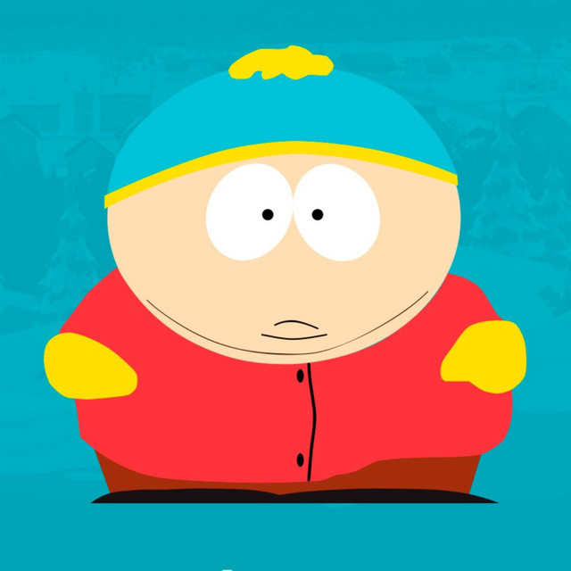

Один з головних персонажів, разом зі Стеном, Кайлом та Кенні. Зазвичай його називають за прізвищем, а не за іменем, як у випадку з іншим головними героями.
Ерік інколи виступає головним лиходієм епізоду, наприклад у епізоді Шкільний портфель, а його друзі не завжди можуть дати відповідь на питання "чому вони з ним дружать?".
Прототипом для створення образу Еріка Картмана став Арчі Банкер (англ. Archie Bunker) - персонаж відомого у штатах ситкому Усією родиною (англ. All in the Family), а його ім’я було утворено комбінацією імен Еріха Гартманна (нім. Erich Hartmann) та Метта Карпмана (англ. Matt Karpman), німецького льотчика-аса та шкільного знайомого Трея Паркера, відповідно. Озвучений Треєм Паркером.
Картман носить червону куртку, жовті рукавички (або рукавиці), синій капелюх з жовтими вставками зверху, коричневі штани і чорні туфлі. Він має коричневий колір волосся і подвійне підборіддя. Незважаючи на те, Картман має надлишкову вагу, він завжди заперечує це, кажучи, «Я не товстий, у мене просто широкі кістки» або деякі його варіації. Проте, його проблема з надлишком ваги може насправді бути генетичною, як це видно по тому, що, за винятком його матері і тітки, вся його родина має таку ж надзвичайно надмірну вагу. Але в епізоді «Fat Camp», коли він говорить своїй матері, щоб поговорити про те, який він великий кісткою, вона говорить: «Це все брехня, дорогенький, ти просто жирний.», Так що в будь-якому випадку може бути правдою , Багато художників малюють Картману або карі або горіхові очі, щоб відповідати його волоссю. Однак, відповідно до епізоду Суккуб, після отримання пересадки очей від мертвого Кенні, він повинен мати блакитні очі Кенні.
За сюжетом Ерік є учнем початкової школи, живе з матір'ю в провінційному містечку Південний Парк, штат Колорадо. Егоїст, расист, антисеміт і гомофоб, жадібний, вульгарний, розпещений, самозакоханий нарцис, зрадник, боягуз, у нього жахливий характер, постійно нецензурно лається, має ожиріння. Практично всі звертаються до нього на прізвище.Батька (у звичайному розумінні) у нього немає, а у більшості родичів такий само жахливий характер як і у самого Еріка. Ненавидить майже всіх, а особливо хіппі та Кайла. Безвідмовний Баттерс постійно страждає від витівок Картмана. Ерік часто є причиною конфлікту і задає проблематику серії. Іноді він глузує з Кенні через його бідність. Водночас його показні та соціопатичні манери часто грають з ним злий жарт: інші хлопці нехтують Еріком, не розуміючи, як же його можна терпіти. У багатьох епізодах Картман відкрито протистоїть іншим трьом персонажам. Втім попри паскудний характер Картман не раз демонструє і надзвичайні здібності до ведення бізнесу та лідерства.

У деяких серіях він з легкістю заробляє гроші чи схиляє інших героїв (як дітей, так і дорослих) до дій, що допомогли б йому досягти власних інтересів. Задуманий як єдиний антигерой з усієї четвірки хлопців, він, однак, з найпершого сезону залучає до себе більше уваги глядачів, ніж решта героїв.
Попри агресивний характер і перевагу у вазі, Картман дуже погано б'ється (зрозуміло, якщо йому не вдається застосувати якийсь нечесний прийом). У декількох серіях він затіває бійку з Кайлом, однак практично завжди верх бере Кайл, крім епізоду 1004, де завдяки хитрості Картман вирубує Кайла, але його самого вирубує Барт Сімпсон.
В епізоді 1209 він за будь-яку ціну намагається уникнути бійки з Венді, але це йому не вдається, в результаті Венді його жорстоко б'є. Єдиний випадок, коли Картман взяв верх в бійці, трапився в епізоді 1101: він бився з карликом Девідом Нельсоном. В епізоді 1302 Ерік вміє стрибати з даху на дах і лазити по вікнах.
Як правило Картман носить блакитну шапку з жовтим помпоном, червону куртку, жовті рукавиці та коричневі штани. Під курткою він носить зелену майку, хоча її рідко видно. У серіях 102 і 216 також можна помітити на Картманом рожеву майку з написом «Beefcake» («Здоровань»). У нього каштанове волосся (хоча іноді воно стає чорним, наприклад коли він зображує Адольфа Гітлера чи борця сумо).